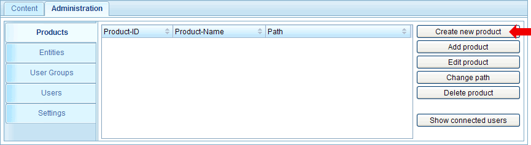
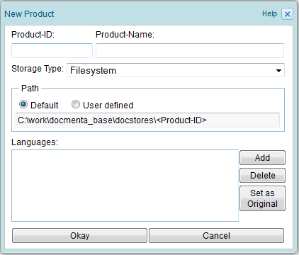
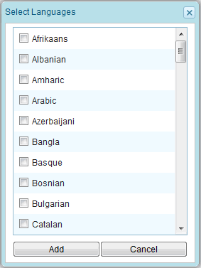
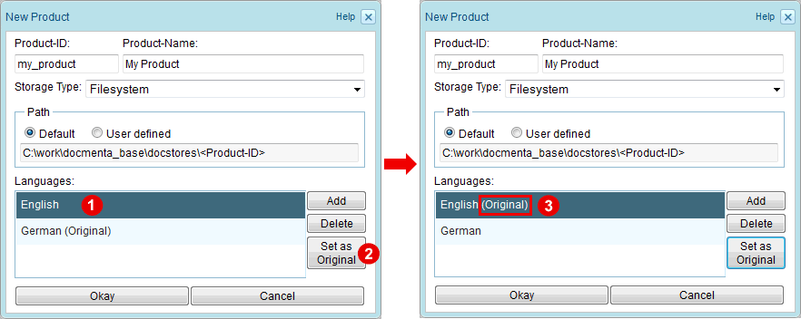
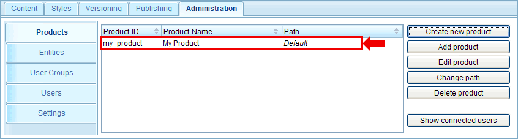

Chapter 1.2. Creating a new product
After installation of Docmenta a product does not yet exist. Therefore, a new product has to be created. To do this, switch to the "Administration" workspace and select the "Products" tab. Now, click the "Create new product" button:

Figure 1.2.1. Creating a product documentation
A dialog is opened where you have to enter the settings for the new product.

Enter a Product-ID. This has to be a unique identifier (no whitespace allowed). For example, enter the identifier "my_product". Fill in a Product-Name, e.g. "My Product". This name is used as display-name for this product.
Next you have to select a storage type. You can choose between filesystem- and database-storage. If you want to store your product documentation in a database, an external database-system has to be available or you have to install the embedded-database plug-in. For this tutorial keep the the default value "Filesystem". See Section 2.7.1.1, “Storage types” for more information on storage types.
If the storage type is "Filesystem" or "Embedded database", then you have to choose the Product-Path (also named product directory), i.e. the location where the product documentation shall be stored within the server-filesystem. If you have installed the server locally then this is within your local filesystem.
In our example we leave the radio button for the Product-Path at the "Default" setting. The default path has the structure
<Base-Directory>/docstores/<Product-ID>
where <Base-Directory> is the document-store directory that was configured during installation of Docmenta (the document-store directory is also the location where all the application and user settings are stored).
For example, if you have entered the document-store directory "C:\work\docmenta_base\", then the product documentation is stored in the directory
C:\work\docmenta_base\docstores\my_product\
Note:
If you want to store the product documentation in a directory that is located outside of the document-store directory, then check the second radio button (user defined) and enter the absolute path in the input field.
Finally, you have to define the content language of the product documentation (the original language). If you intend to translate the content, then you can also define the translation languages here. Click the "Add" button to add languages to the product configuration. This will open following dialog showing a list of all languages that are supported by Docmenta:

Figure 1.2.2. Product language selection
In our example, check the languages "English" and "German" and click the "Add" button to add them to the product configuration.
By default, one of the selected languages is marked as the "original" language. To change the original language, proceed as follows (see screenshot below): select the language that shall be the new original language  and click the "Set as Original" button
and click the "Set as Original" button  . The selected language is then marked as the original language as is indicated by the word "Original" added in round brackets
. The selected language is then marked as the original language as is indicated by the word "Original" added in round brackets  :
:

Figure 1.2.3. Changing the original language
Now, that you have entered all information click the "Okay" button to create the product. The newly created product is now shown in the list of existing products:

Figure 1.2.4. List of existing products
Notes:
- Be aware that the storage type and original language cannot be changed easily after the product has been created (see Section 2.7.1.4, “Editing a product” for additional information)! Yet it is possible to change the Product-ID and -Name and to add/remove translation languages at any time after the product has been created.
- To change the configuration settings of an existing product, select the product from the list of existing products and then click the "Edit" button. Alternatively, you can double-click the product in the list. If you change the product path, then you also have to move the files from the old filesystem location to the new location (moving the files will not be done by Docmenta).
- To delete a product, select the product from the list and click the "Delete" button. Be aware that if the Product-Path is set to the default path, then this operation deletes all files in the Product-Path directory!